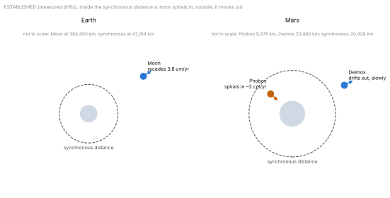

Library › The Unified Framework for the Graviton Pressure Theory
Planetary Mechanics
Orbits, Spin and Stability in a Flowing Medium
About This Paper
Newton’s laws and General Relativity describe planetary motion to great precision: where a planet will be, how fast its orbit turns, when a moon will lock its face toward its planet. They do not say what carries the motion or what holds it steady. This paper gives GPT’s account. A planet coasts through a medium that is itself flowing inward and accelerating toward the Sun. Its orbit closes because that acceleration weakens as the inverse square of distance, and fails to close by a measured amount because the medium’s pressure is lowered near the Sun. Its spin reaches out into the medium and is reached in return: by the tides that slow it, by the companions that steady its axis, by the resonances that sort whole systems into order over time.
This is the second edition; the list at the end says what changed from the first and why. The field is in Part 16, the equations in Part 23, the numbers in Part 24.123 Claims are marked by their status, as the key shows.
An Orbit Is Coasting
Bodies small compared with what they orbit move at one speed at one distance, whatever they are made of. [Argued] Measurement shows it in orbit itself: the MICROSCOPE satellite carried test masses of platinum and titanium around the Earth together, and over many orbits they followed the same path to one part in \(10^{15}\);5 the Earth and the Moon, one with a large iron core and the other mostly rock, are carried toward the Sun alike by its inflow, to a few parts in \(10^{13}\), as lunar laser ranging shows;6 ring particles from centimetres to metres across orbit Saturn at one speed at each distance; and thousands of Trojan asteroids share Jupiter’s orbit and period. In GPT this follows from the delivery being proportional to mass: the medium accelerates a pebble and a planet at one distance alike, so they orbit alike. For bodies of comparable mass, both orbit their common centre, each carried by the other’s inflow (Part 7): a planet makes its star wobble, which is how many planets around other stars are found, and the period depends on the sum of the two masses.
Nothing is spent to keep a planet moving. [Argued] No energy input is needed to maintain pathing. A body moving steadily through the medium is not braked (Part 11); the planets have orbited the Sun for four and a half billion years without running down.
Why Orbits Close, and Why They Do Not Quite
The closing of planetary orbits measures the inverse square. [Argued] In 1873 Joseph Bertrand proved that only two laws of central acceleration make every bound orbit close on itself: acceleration weakening as the inverse square of distance, and acceleration growing in proportion to distance, as on a spring.7 Any other law makes the orbit’s closest point creep round from one orbit to the next. So the fact that planetary orbits close, to high precision, measures that the medium’s acceleration weakens as \(1/r^2\). Ellipses are pressure harmonics: an ellipse is the shape a coasting body traces through a medium whose acceleration falls as the inverse square.
They do not quite close. [Argued] Mercury’s closest point to the Sun advances by 43 arcseconds per century more than the pull of the other planets accounts for; the advance has since been measured for Venus, Earth, Mars, the asteroid Icarus, a pair of orbiting neutron stars and a star orbiting the black hole at the centre of the Milky Way, each at the size General Relativity gives.
Per orbit, the closest point advances by \(3\pi\) times the fraction by which the medium’s active pressure is lowered at the orbit [Argued], taken at the semi-latus rectum \(a(1-e^2)\): \begin{equation}\Delta\varphi = 3\pi\,\frac{\Delta P}{P_0} = 3\pi\,\frac{2GM}{c^2a(1-e^2)}. \label{eq:precession}\end{equation} At Mercury’s orbit the pressure is lower by 5.3 parts in a hundred million, which gives 43.0 arcseconds per century over its 415 orbits; at Earth’s, by 2.0 parts in a hundred million, which gives 3.8. The precession is a direct reading of how far the medium’s pressure has dropped where the planet orbits. Textbooks divide the advance into contributions from “space”, “time” and velocity; that division depends on the coordinates chosen and is a description. In the medium there is one cause.
Why the outward hold of sideways motion is reduced by exactly the pressure ratio, in terms of what touches what, is owed. [Open] The likeliest reading is that it is the same factor that slows clocks and squashes bonds along the flow (Part 23): the planet’s sideways motion is carried by its exchanges with the medium, like all its other processes, and where the active pressure is lower those exchanges deliver less.
Escape Is the Inflow Run Backward
At every distance, the medium’s inflow speed equals the escape speed. [Argued] Both are \(\sqrt{2GM/r}\): 11.2 kilometres a second at the Earth’s surface, 618 at the Sun’s. The inflow speed at each distance is the speed the medium has gained on its way in from far away; a body carried in from rest far away would arrive at that same speed. [Hypothesis] A body launched outward at that speed is slowed by the medium’s acceleration exactly as the medium was sped up on its way in, and comes to rest only far away; a slower body is turned back. Escape is the inflow run backward. The river picture of the black hole uses the same fact: the medium flows in at the escape speed, and at the horizon that speed is \(c\) (Part 24).8
Spin Reaches Out
A spinning body induces outward ripples in the surrounding graviton field, creating a counter-pressure shell that stabilises interaction with ambient flow. In GPT a spinning body winds the counterflow of its ejecta around its axis, turning most strongly toward its equator and not at all along its axis (Part 16). [Hypothesis] Measurement shows a spinning body reaching out:
The medium is dragged round. Gyroscopes orbiting the Earth were turned by 37 milliarcseconds a year by the Earth’s rotation, as Gravity Probe B measured.9 The swirl weakens as the inverse cube of distance.
A planet’s own rhythms are written into its rings. Waves in Saturn’s innermost ring are driven by oscillations inside Saturn itself, so that the ring records the planet’s interior.10
Rings sit at resonances with the spin of what they circle. The ring of the dwarf planet Haumea lies where its particles orbit once for every three turns of Haumea; Quaoar’s ring lies at a resonance with Quaoar’s spin, outside the distance where a ring would normally be torn apart into moons.1112
Spin and Orbit Lock Together
Tides slow spin toward the orbital rate. [Argued] A planet raises a tide on its moon and the moon on its planet; the tide is the difference in the medium’s inflow across the body (Part 13).13 Friction inside the flexing body makes the bulge lag, and the medium’s pressure on the lagging bulge turns the spin toward the orbital rate. This is the graviton torque, \(T=-\gamma(\Omega-\Omega_{\text{corr}})\), with \(\Omega_{\text{corr}}\) the orbital rate (Part 24). The locks it produces are measured:
the Moon shows the Earth one face; Pluto and Charon show each other one face;
Mercury turns three times for every two orbits, a lock found by radar in 1965;14
the Earth’s day has lengthened by about 1.8 milliseconds a century over the last 2,700 years, as recorded eclipses show; the Moon’s tide slows it by more than this, and changes inside the Earth offset part of it.15

Whether a moon moves out or spirals in is decided by where it orbits, not by which way. [Argued] The rule is measured (Figure 1). Every planet has a synchronous distance, at which an orbit keeps pace with its spin; for the Earth it is 42,164 kilometres, where geostationary satellites hang. A moon outside it is carried forward by the planet’s tidal bulge and moves outward: lunar laser ranging measures the Moon receding by 3.8 centimetres a year.16 A moon inside it lags the bulge and spirals in: Phobos, orbiting Mars well inside its synchronous distance though in the same direction as Mars spins, is drawing inward by about 2 centimetres a year and will break apart or strike Mars within tens of millions of years.17 A retrograde moon is always on the losing side, which is why Neptune’s large retrograde moon Triton is expected to spiral in.18 But retrograde motion as such is not unstable: Jupiter and Saturn have dozens of small retrograde moons in distant, stable orbits.
A companion steadies a planet’s axis. [Argued] The Earth’s axis is tilted by \(23.4^\circ\) and varies only between about \(22.1^\circ\) and \(24.5^\circ\). Laskar’s calculations of 1993 found that without the Moon, the Earth’s tilt would wander widely and chaotically;19 later, longer calculations found a narrower but still large range for a moonless Earth.20 Mars, with no large moon, has swung between about \(15^\circ\) and \(45^\circ\) over the last ten million years. In GPT the Moon acts through the medium [Hypothesis]: its inflow across the Earth’s equatorial bulge turns the Earth’s axis slowly round, once in 25,772 years, fast enough to keep the axis away from the resonances with the other planets that would otherwise rock it. The Earth’s axial tilt is sustained by lateral graviton tension, not by its moment of inertia alone: by a companion, acting through the medium.
Systems Build Their Own Structure
At any instant an orbit is possible at any distance [Argued]: Jupiter’s large moons, for example, are spaced geometrically, their periods in the ratio 1:2:4. But the field remembers, and each body’s movement helps maintain the corridor that contains it. That is measured, as structure that systems build over time (Part 16):
Gaps cleared by resonance. The Kirkwood gaps in the asteroid belt lie where an asteroid’s period would stand in a simple ratio to Jupiter’s, 3:1, 5:2, 2:1; the Cassini Division in Saturn’s rings begins where ring particles would orbit twice for each orbit of the moon Mimas.
Chains. Jupiter’s moons Io, Europa and Ganymede orbit in the ratio 1:2:4; the seven planets of TRAPPIST-1 form an unbroken resonant chain.21
Regular spacing. Among planetary systems found by the Kepler telescope, neighbouring planets tend to be similar in size and regularly spaced,22 and their period ratios gather just wide of 3:2 and 2:1.23
In GPT the carrier of this sorting is the medium [Hypothesis]: each body’s inflow, ejecta and rotational rhythm meet the others’ (Part 16), and where conjunctions recur at the same places, their effects add over millions of orbits. Planetary shells differ from an atom’s (Part 19): an atom’s shells form at once because the electron’s wave is the size of its orbit; a planet’s wavelength is about \(10^{-63}\) metres, so its shells can form only by slow sorting.
Many Bodies
Where two large bodies orbit each other, there are five places where a small body can keep pace with them [Argued], the Lagrange points. Two of them, sixty degrees ahead of and behind the smaller body, are stable if the larger body has more than about 25 times the smaller’s mass, a threshold Routh found in 1875. Jupiter has thousands of Trojan asteroids at these points; the Earth has two known, the first found in 2011.24 In GPT they are places where the combined inflows of the two bodies give the same acceleration that keeps pace with their orbit [Hypothesis]: the pressures of the two flows combine (Part 7), and a body there coasts in step with both.25
The Exceptions
Venus’s backward spin and Uranus’s tilt both have measured or calculated accounts that GPT can carry.
Venus’s day is not steady. [Argued] Venus turns backward once in 243 Earth days, and the length of its day varies by about twenty minutes as its massive atmosphere trades spin with the solid planet.26 Its slow backward spin is understood as a balance between the Sun’s tide on the solid planet and a tide raised in its atmosphere by the Sun’s heating, which pushes the other way.27 Both torques act through the medium [Hypothesis]: the Sun’s inflow across the planet, and its pressure on the redistributed atmosphere.
Uranus’s tilt, \(98^\circ\), is open. [Open] A giant impact early in its history is the traditional account; a slow tilting through a resonance between the spin of its axis and the orbits of the planets, driven by a migrating moon, is a recent alternative.28
Unexplained: The Flyby Anomaly
Several spacecraft have gained or lost a few millimetres per second during flybys of the Earth that no known force accounts for. [Argued] The largest, NEAR in 1998, was 13 millimetres per second. In 2008 Anderson and colleagues fitted the changes with a formula in which the size depends on the spacecraft’s incoming and outgoing angles to the Earth’s equator, and the constant is set by the Earth’s rotation, \(2\omega R/c\), where \(\omega\) is the Earth’s spin rate and \(R\) its radius.29 Later flybys reported no anomaly at the size the formula predicts. The anomaly is unexplained. [Open] A rotational imprint of the Earth on the medium around it, beyond its shape, is GPT’s prediction [Hypothesis] (Part 16), and the anomaly’s dependence on the Earth’s spin is the kind of signature it would leave; a medium account would have to give both the flybys that showed it and those that did not. This is the measured case nearest to GPT’s prediction of inertial anomalies in spacecraft.
What Remains to Be Derived
The interface for the precession: why the outward hold of sideways motion is reduced by exactly the medium’s pressure ratio. [Open]
The rate of sorting: how fast the medium carries resonant effects between bodies, and how long a system takes to build its structure. [Open]
The rotational imprint of a spinning body beyond its shape, and its size near the Earth, for comparison with the flyby anomaly. [Open]
The tidal torque from the medium’s inflow across a flexing body, with its lag, as a derivation rather than an adoption. [Open]
Conclusion
A planet coasts sideways through a medium that is itself flowing inward and accelerating toward the Sun, and nothing is spent to keep it moving. Its orbit closes because the medium’s acceleration weakens as the inverse square of distance, which Bertrand’s theorem makes exact. It fails to close by \(3\pi\) times the fraction by which the medium’s pressure is lowered at the orbit: 43 arcseconds per century for Mercury, one cause rather than three. Escape is the inflow run backward. A spinning body reaches out into the medium, dragging it round, writing its rhythms into its rings, and its spin is reached in return: tides lock it toward its orbit, moons move out or spiral in according to where they orbit, and a companion steadies its axis. Over long times whole systems sort themselves into resonances, chains and regular spacing; the field remembers. Lagrange points are where the combined inflows let a small body keep pace. The exceptions have accounts the medium can carry, and one measured anomaly, near a spinning Earth, is still unexplained.
Changes in the Second Edition
This list records what changed from the first edition and why. Changes to the argument alter what the paper claims or how it supports a claim; clarifications improve wording, sources or presentation and leave the argument as it was.
Changes to the argument
“Fall” is replaced throughout: bodies are carried alike by the medium (Part 7), and quantities that decrease are said to weaken, lower or drop.
The exponential pressure field \(P_g=P_0e^{-kr}\) is withdrawn, with the orbital speed and escape formulas built on it: they make a body’s orbit depend on its own mass, which Kepler’s third law and universality rule out. The inflow \(v^2=2GM/r\) and its acceleration \(GM/r^2\) replace it.
“Motion is not preserved; it is maintained by field” is withdrawn: motion persists at no cost (Part 11). An orbit is restated as coasting through an inward-accelerating medium.
Quantised radii \(r_n=\sqrt{n}R_0\) and \(r_n=\frac1k\ln(\ldots)\) are withdrawn: no system is spaced that way. The field’s memory is kept as structure built over time: resonance gaps, chains and regular spacing, with the medium as carrier.
New: why orbits close (Bertrand’s theorem) and why they do not quite: the precession as the medium’s lowered pressure acting on sideways motion, \(3\pi\,\Delta P/P_0\) per orbit, replacing “corridor asymmetry”.
New: the escape speed as the inflow speed.
Kept: spin reaching out into the medium, with frame-dragging, ring waves driven by Saturn’s interior, and rings at spin resonances (Haumea, Quaoar). The ripple’s weakening with distance is corrected to the inverse cube.
Kept: spin–orbit locking, with the graviton torque identified as the tidal torque. The universal decay of retrograde bodies is withdrawn and replaced by the measured rule: inside the synchronous distance a moon spirals in, outside it moves out (the Moon, Phobos, Deimos, Triton).
Kept: tilt stabilised from outside, restated as a companion acting through the medium (the Moon and the Earth’s axis).
Lagrange points are restated as places where the combined inflows let a body keep pace, with Routh’s threshold.
Venus and Uranus are restated with their measured or calculated accounts; “field trauma” and “corridor polarity flip” are withdrawn.
New: the flyby anomaly, as an unexplained measurement bearing on GPT’s rotational imprint.
Withdrawn: satellite “pressure snaps” and spacecraft “coherence loss” at layer boundaries (satellite decay is tracked continuously; spacecraft are navigated to centimetres); galactic “discrete velocity bands” (rotation curves are flat; the relaxation boundary of Part 23 replaces them); layered refraction of light (lensing is continuous, Part 23).
Removed, as too far from the core: navigation, engineering and gravitational cartography; coherence sensors; “resonance, not mass, governs form”; the undefined terms \(L_f\), \(A_{\text{spin}}\), \(R(\vec v)\), \(\xi\), \(E_d\) and \(C_{\text{motion}}\); the closing passages on song and breath.
Lagrange points as “harmonic null zones” where flows cancel are restated as places where the combined inflows keep pace with the orbit. The analogy with electron shells is answered by the size of a planet’s wavelength, about \(10^{-63}\) metres (Part 19).
Clarifications
The subtitle changes from and Rotational Stability in Graviton Corridors to Orbits, Spin and Stability in a Flowing Medium. “Corridor” now keeps the meaning of Parts 21 and 22, a path inside matter or a line of a magnet’s swirl; orbital structure is described as shells, after Part 16.
The cross-references are renumbered.
One figure, status marks and this list are added.